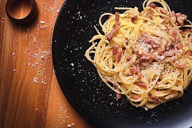

Description
Carbonara is an Italian pasta dish from Rome made with eggs, hard cheese, cured pork, and black pepper.
The dish arrived at its modern form, with its current name, in the middle of the 20th century.
The cheese is usually Pecorino Romano, Parmigiano-Reggiano, or a combination of the two.
What you'll need:
- 3/4 lb. spaghetti
- 1 piece Knorr beef cube
- 7 strips bacon
- 15 ounces all-purpose cream
- 6 tablespoons grated Parmesan cheese
- 2 cloves garlic minced
- 1/8 teaspoon ground nutmeg
- 1 teaspoon salt
- 2 quarts water
How to make Carbonara
- Cook the bacon until crispy. Do this by placing each strip in a pan. Cook in medium heat for 2 minutes.
Flip the bacon and cook the opposite side for another 2 minutes. Continue performing the same steps until each piece gets crispy.
Set aside. Save the bacon grease.
- Cook the spaghetti by pouring water in a cooking pot. Let boil. Add salt and put the spaghetti into the pot. Cook for 12 minutes
or until al dente. Remove the spaghetti Set aside. Save ¼ cup of water used to cook spaghetti.
- Prepare the carbonara sauce by heating 3 tablespoons of bacon grease. Saute onion and garlic.
- One the onion softens, pour all-purpose cream into the pan. Stir. Add ¼ cup water.
- Add Knorr Beef Cube. Stir until well blended.
- Put chopped bacon and nutmeg into the sauce. Stir.
- Add the cooked spaghetti. Toss until spaghetti gets totally coated with sauce.
- Add Parmesan cheese. Toss. Add more bacon.
- Transfer to a serving plate. Serve and enjoy!